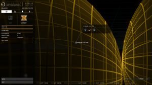
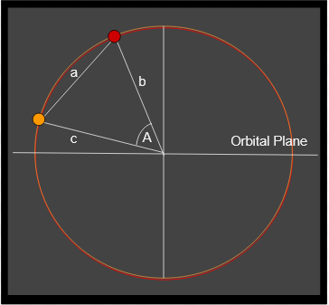
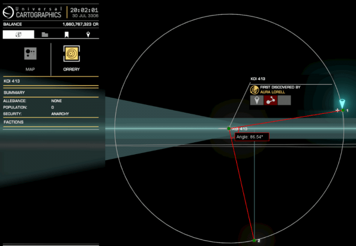

In July 3306 Canonn researchers mining the Spansh galactic database identified that two class III gas giants in the KOI 413 system were in essentially the same orbit. The only difference between them being the orbital inclination and the orbital period.
This configuration meant that the bodies were almost certain to collide at some point.

Class III Gas Giants dubbed Rhubarb and Custard meeting.
The challenge was to work out a schedule of conjunctions and to determine whether they would result in an impact.
A team was dispatched to investigate with the fleet carrier Kitsune J7V-15N and commanders Camulorix, Felsen83, SovereignWinter, RapidFire and LCU No Fool Like One. The team established that the next conjunction would happen on the 9th August 3306 at approximately 08:30am, their surfaces approaching within 50km of each other.
With a direct observation of a planetary conjunction the team set about estimating a a schedule of conjunctions and their severity.
NB: This method of calculating collisions has now been superceeded with the addition of meanAnomaly to the telemetry provided by the pilot federation flight logs. It is now possible to calculate the planet positions without taking measurements from the orrery.
The latest collision data will be supplied on the Canonn Calendar
Table 1: Estimated Conjunctions and Impacts
| Time | Angle (°) | Surface Separation (km) | Surface Separation Diameters | Notes |
| 09/08/3306 09:05:27 | 36.36 | -419.657 | 0.00 | Impact Disputed |
| 18/09/3306 03:53:34 | 256.80 | 90811.983 | 0.64 | Miss |
| 27/10/3306 22:41:40 | 117.25 | 70554.655 | 0.50 | Miss |
| 06/12/3306 17:29:46 | 337.69 | -51510.048 | -0.36 | Minor Impact |
| 15/01/3307 12:17:53 | 198.14 | -67881.300 | -0.48 | Minor Impact |
| 24/02/3307 07:05:59 | 58.58 | 62007.722 | 0.44 | Miss |
| 05/04/3307 01:54:05 | 279.02 | 94174.209 | 0.66 | Miss |
| 14/05/3307 20:42:12 | 139.47 | 13244.818 | 0.09 | Miss |
| 23/06/3307 15:30:18 | 226.87 | -141193.661 | -0.99 | Head on Collision |
| 02/08/3307 10:18:24 | 220.36 | 12695.865 | 0.09 | Miss |
| 11/09/3307 05:06:31 | 80.80 | 94059.989 | 0.66 | Miss |
| 20/10/3307 23:54:37 | 301.25 | 62382.824 | 0.44 | Miss |
| 29/11/3307 18:42:43 | 161.69 | -67196.149 | -0.47 | Minor Impact |
| 08/01/3308 13:30:50 | 22.14 | -52177.794 | -0.37 | Minor Impact |
| 17/02/3308 08:18:56 | 242.58 | 70223.450 | 0.49 | Miss |
| 28/03/3308 03:07:02 | 103.03 | 90975.613 | 0.64 | Miss |
| 06/05/3308 21:55:09 | 323.47 | 160.604 | 0.00 | Very Close |
| 16/06/3308 16:43:15 | 183.91 | -126106.670 | -0.89 | Major Impact |
| 26/07/3308 11:31:21 | 44.36 | 25055.309 | 0.18 | Miss |
| 04/09/3308 06:19:28 | 264.80 | 96155.435 | 0.67 | Miss |
| 14/10/3308 01:07:34 | 125.25 | 53212.794 | 0.37 | Miss |
| 22/11/3308 19:55:41 | 345.69 | -83249.018 | -0.58 | Major Impact |
| 01/01/3309 14:43:47 | 206.14 | -36914.239 | -0.26 | Minor Impact |
| 10/02/3309 09:31:53 | 66.58 | 77402.773 | 0.54 | Miss |
| 22/03/3309 04:20:00 | 287.03 | 86639.487 | 0.61 | Miss |
| 30/04/3309 23:08:06 | 147.47 | -13618.604 | -0.10 | Minor Impact |
Methodology
The calculations described in this document are only applicable where the orbital eccentricity is zero as this eliminates the complexity of factoring in the argument of periapsis and the eccentricity of the orbit itself.
Table 2: Planetary Statistics From Telemetry
| 1 (Rhubarb) | 2 (Custard) | |
| Gravity (g) | 2.5414818822229 | 2.5414818822229 |
| earthMasses | 316.999878 | 316.999878 |
| radius (km) | 71231.248 | 71231.248 |
| radius (au) | 0.0004761514821 | 0.0004761514821 |
| orbitalPeriod (days) | 15.228997088136573 | 24.6742395339236 |
| semiMajorAxis (au) | 0.161000110696602 | 0.161000110696602 |
| semiMajorAxis (km) | 24085273.790976 | 24085273.790976 |
| orbitalEccentricity | 0 | 0 |
| orbitalInclination(°) | 88.809996 | 89.379995 |
Calculating the time and separation at the planetary conjunction is dependent on getting a measurement of the positions of the planets in the orbit relative to the points where the two orbits meet.
On our first visit to the system we calculated the position by measuring the distance between the two planets as shown on the HUD and then using the semiMajorAxis and distance between the two planets we were able to calculate the angle. However this could only give a very rough approximation because it cannot account for the orbital inclination. This method did enable us to estimate the conjunction to the nearest 15 minutes or so.
In figure 1: the distance between the planets (a) is 50 light seconds and sides b and c are both equal to the semiMajorAxis 0.161000110696602 au. Converting light seconds to au gives us a = 0.100199 au b = 0.161000110696602 au and c = b
Figure 1: Calculating Angle by Distance

Planets 1 and 2 form a triangle with the orbital focus
We can calculate the angle A using the following formula
This gives us an angle of 36.26° between Rhubarb and Custard.
This was sufficient to allow us to estimate the time of the next conjunction to within 15 minutes so that we could make a direct observation of the point where the planets met the orbital plane.
Another technique for calculating the position of the orbits is to directly measure the angles from the Orrery. This can be done by tilting the orrery so that the orbital plane is horizontal and the orbit shows as a perfect circle. Then the angle between the orbital plane and each planet can be measured either using software or using a protractor. The software used in this case was IC Measure
Figure 2: Measuring Angle

Using IC Measure to measure the angle between planets
One of the difficulties with direct measurement is that there can be inaccuracies in the measurement from the screen and this can be exacerbated if the orrery is not perfectly aligned. In the image above, you can see that the grid line is slightly off to one side and can affect the estimate considerably. Even multiple measurements from the same images can show disparities that can add minutes to the estimated times. After reviewing orrery images and calculating times we found a standard deviation of 19.6 minutes.
For this reason we would recommend taking multiple measurements at different times over a period of days.
Bear in mind that we are measuring the number of degrees that planet 1 must catch up to reach planet 2. So they must be measured in the direction of travel. In the example below, planet 1 has just passed planet two. So the distance it needs to catch up is 360° – 65° = 295°
If there is a measurable angle between the two planets at the center it is possible to use the angles to determine the next time what the planets will collide.
If we have a planet at angle A1 from an arbitrary point on the circumference and a velocity measured in degrees we can calculate its new position after time T with the following formula.
But when the planets are conjoined they will be in the same position therefore
If we rewrite to find T we get
To find the velocity of a body in degrees divide 360 by the orbital period. For Rhubarb and Custard the angular velocity is as follows
A1 and A2 are the angle in degrees around the circle. This can be measured directly off the orrery or you can calculate the position by measuring the distance between the planets. You can make A1 = 0 and just measure the angle between A1 and A2.
Adding T to the the date and time that the measurement was taken will give you an estimate of the date and time of the next conjunction. Making multiple measurements at different times can give you an idea of how good your estimates are. As you can see from the table below the margin of error is just over an hour.
Table 3: Estimates conjunctions from multiple observations
| Date Time | Angle° | Time Delta (days) | Estimated Conjunction |
| 28/07/3306 21:16:29 | 103.98 | 11.49077398 | 09/08/3306 09:03:12 |
| 29/07/3306 11:17:25 | 98.79 | 10.91722987 | 09/08/3306 09:18:14 |
| 29/07/3306 11:17:25 | 98.71 | 10.90838911 | 09/08/3306 09:05:30 |
| 30/07/3306 13:16:10 | 88.82 | 9.815450519 | 09/08/3306 08:50:25 |
| 30/07/3306 15:10:42 | 88.13 | 9.73919899 | 09/08/3306 08:55:09 |
| 30/07/3306 18:10:00 | 87.05 | 9.61984877 | 09/08/3306 09:02:35 |
| 30/07/3306 18:50:54 | 86.97 | 9.611008013 | 09/08/3306 09:30:45 |
| 30/07/3306 20:02:01 | 86.39 | 9.546912524 | 09/08/3306 09:09:34 |
| 30/07/3306 20:02:01 | 86.48 | 9.556858376 | 09/08/3306 09:23:54 |
| 30/07/3306 21:28:14 | 85.82 | 9.48392213 | 09/08/3306 09:05:05 |
| 30/07/3306 21:28:14 | 85.85 | 9.487237414 | 09/08/3306 09:09:51 |
| 31/07/3306 09:10:26 | 81.49 | 9.005416154 | 09/08/3306 09:18:14 |
| 31/07/3306 16:53:45 | 78.52 | 8.677203049 | 09/08/3306 09:08:55 |
| 01/08/3306 15:08:34 | 70.55 | 7.796442627 | 09/08/3306 10:15:27 |
| 02/08/3306 19:57:39 | 59.17 | 6.538844936 | 09/08/3306 08:53:35 |
| 04/08/3306 03:15:21 | 47.39 | 5.23704346 | 09/08/3306 08:56:42 |
| 04/08/3306 03:15:21 | 47.36 | 5.233728176 | 09/08/3306 08:51:55 |
| 06/08/3306 01:04:44 | 30.03 | 3.318599179 | 09/08/3306 08:43:31 |
| 07/08/3306 01:59:00 | 20.74 | 2.291966266 | 09/08/3306 08:59:26 |
| 07/08/3306 18:54:42 | 14.27 | 1.57697004 | 09/08/3306 08:45:32 |
| 08/08/3306 02:33:24 | 11.46 | 1.266438448 | 09/08/3306 08:57:04 |
If the planets are already in conjunction when you take the measurement, then the angles will be zero and T will be zero. So in this special case we need to use a different formula to work out the next conjunction.
In this instance we can use the formula for calculating the synodic period. The synodic period is the length of time it takes for the two orbits to reach the same position relative to each other.
If O1 and O2 are the orbital periods of the two planets then the Synodic period (S) can be calculated using the following.
If you want to get the dates for a series of conjunctions you can simply take the date and time you calculated for the next conjunction and add on the synodic period.
If you know that in time T the planets will be conjoined and and you measure the angle of the planets relative to the point where the orbital plane crosses the circumference then you can in effect play time forward to work out what the angle will be relative to the orbital plane when the planets meet.
You only need to measure the angle for one planet because both will be at the same angle after time T. However it is useful to do this with both planets so you can get a sense of how inaccurate your measurements are.
A1 = measured angle relative to the orbital plane
A2 = the new angle we want to calculate
O = The orbital period of the planet used in the measurement
T = The number of days since measurement til the next conjunction
This calculation may result in numbers that are greater than 360 but we are only interested in the distance from the point where the circumference crosses the orbital plane so we take the modulo 180 of the number.
As you can see from the calculations below the estimates can have a fair amount of variation between them.
Table 4: Measured orbits and Estimates
| Date Time | Planet Angle(°) | P1 Orbit Angle(°) | P2 Orbit Angle(°) | Time Delta days) | Estimated Conjunction | Estimated
Angle 1(°) |
Estimated
Angle 2(°) |
| 28/07/3306 21:16:29 | 103.98 | 124.26 | 228.08 | 11.49 | 09/08/3306 09:03:12 | 35.89 | 35.73 |
| 29/07/3306 11:17:25 | 98.79 | 138.08 | 236.81 | 10.92 | 09/08/3306 09:18:14 | 36.15 | 36.09 |
| 30/07/3306 13:16:10 | 88.82 | 163.7 | 252.46 | 9.82 | 09/08/3306 08:50:25 | 35.73 | 35.67 |
| 30/07/3306 15:10:42 | 88.13 | 165.54 | 253.68 | 9.74 | 09/08/3306 08:55:09 | 35.77 | 35.78 |
| 30/07/3306 18:10:00 | 87.05 | 168.79 | 257.76 | 9.62 | 09/08/3306 09:02:35 | 36.19 | 38.11 |
| 30/07/3306 18:50:54 | 86.97 | 169.67 | 256.38 | 9.61 | 09/08/3306 09:30:45 | 36.87 | 36.61 |
| 30/07/3306 20:02:01 | 86.39 | 170.84 | 257.16 | 9.55 | 09/08/3306 09:09:34 | 36.52 | 36.45 |
| 30/07/3306 21:28:14 | 85.82 | 172.28 | 257.99 | 9.48 | 09/08/3306 09:05:05 | 36.47 | 36.36 |
| 31/07/3306 09:10:26 | 81.49 | 183.81 | 265.09 | 9.01 | 09/08/3306 09:18:14 | 36.69 | 36.48 |
| 31/07/3306 16:53:45 | 78.52 | 191.37 | 269.98 | 8.68 | 09/08/3306 09:08:55 | 36.49 | 36.58 |
| 01/08/3306 15:08:34 | 70.55 | 212.96 | 283.41 | 7.80 | 09/08/3306 10:15:27 | 37.26 | 37.16 |
| 02/08/3306 19:57:39 | 59.17 | 241.81 | 300.84 | 6.54 | 09/08/3306 08:53:35 | 36.38 | 36.24 |
| 04/08/3306 03:15:21 | 47.39 | 272.48 | 319.92 | 5.24 | 09/08/3306 08:56:42 | 36.28 | 36.33 |
| 06/08/3306 01:04:44 | 30.03 | 317.66 | 347.8 | 3.32 | 09/08/3306 08:43:31 | 36.11 | 36.22 |
| 07/08/3306 01:59:00 | 20.74 | 342.42 | 3.22 | 2.29 | 09/08/3306 08:59:26 | 36.60 | 36.66 |
| 07/08/3306 18:54:42 | 14.27 | 358.82 | 13.21 | 1.58 | 09/08/3306 08:45:32 | 36.10 | 36.22 |
| 08/08/3306 02:33:24 | 11.46 | 6.4 | 17.85 | 1.27 | 09/08/3306 08:57:04 | 36.34 | 36.33 |
In order to calculate the separation at Conjunction we need to have a good estimate of the angle between either of the bodies and the point where the orbit touches the orbital plane.
In Figure 2, you can see that the orbits are inclined relative to one another so that at the top and bottom of the orbit the separation between the planets is at its maximum and at the orbital plane the distance between the planets would be zero. Note that the inclination between the orbits is greatly exaggerated for illustrative purposes.
Figure 2: Orbital Plans
In the diagram for the Top Elevation, the conjunction of planets is where the dotted Height line meets the circumference of the orbit. This forms an isosceles triangle with the focus of the orbit and the point where the orbital plane meets the circumference. The length of each of the equal sides is the semiMajorAxis.
By measuring angle A at the time of closest approach it is possible to calculate the height h. This can be done as a direct measurement at the time of conjunction or you may use an estimate calculated from measurements calculated prior to the conjunction.
First calculate the length of side a:
Next calculate the angles of the other two corners of the triangle.
These can be combined to calculate the area
Finally the height can be calculated
Looking at the side elevation diagram we can see that b2 = h and the Separation = 2 x a2. The angle A2 is half the angle between the orbits.
So we can calculate a2 using the following formula
And therefore the separation will be 2 x A2
If we perform these calculations on the angles that we estimated, we can get some estimates of the separation at conjunction. The separation is from the centre of each planet so we can subtract the radii of the planets to find out if the surfaces will touch. Positive numbers mean they will miss. Negative numbers mean that they will pass through each other.
As you can see from the table, there is quite a spread caused by observational inaccuracy. The conjunction observed on the 9th August was so close that there was some dispute as to weather the planets actually touched.
Table 5: Estimated Seperation from multiple measurements
| Date Time | Estimated Conjunction | Estimated
Angle 1 (°) |
Separation (km) | Surface Separation (km) |
| 28/07/3306 21:16:29 | 09/08/3306 09:03:12 | 35.89 | 140471.4303 | -1991.066 |
| 29/07/3306 11:17:25 | 09/08/3306 09:18:14 | 36.15 | 141357.3376 | -1105.158 |
| 29/07/3306 11:17:25 | 09/08/3306 09:05:30 | 35.94 | 140650.7178 | -1811.778 |
| 30/07/3306 13:16:10 | 09/08/3306 08:50:25 | 35.73 | 139918.0822 | -2544.414 |
| 30/07/3306 15:10:42 | 09/08/3306 08:55:09 | 35.77 | 140045.2968 | -2417.199 |
| 30/07/3306 18:10:00 | 09/08/3306 09:02:35 | 36.19 | 141495.9477 | -966.548 |
| 30/07/3306 18:50:54 | 09/08/3306 09:30:45 | 36.87 | 143750.7883 | 1288.292 |
| 30/07/3306 20:02:01 | 09/08/3306 09:09:34 | 36.52 | 142593.3688 | 130.873 |
| 30/07/3306 20:02:01 | 09/08/3306 09:23:54 | 36.76 | 143382.3263 | 919.830 |
| 30/07/3306 21:28:14 | 09/08/3306 09:05:05 | 36.47 | 142428.5129 | -33.983 |
| 30/07/3306 21:28:14 | 09/08/3306 09:09:51 | 36.55 | 142691.9332 | 229.437 |
| 31/07/3306 09:10:26 | 09/08/3306 09:18:14 | 36.69 | 143162.4173 | 699.921 |
| 31/07/3306 16:53:45 | 09/08/3306 09:08:55 | 36.49 | 142495.3444 | 32.848 |
| 01/08/3306 15:08:34 | 09/08/3306 10:15:27 | 37.26 | 145069.8675 | 2607.372 |
| 02/08/3306 19:57:39 | 09/08/3306 08:53:35 | 36.38 | 142128.9876 | -333.508 |
| 04/08/3306 03:15:21 | 09/08/3306 08:56:42 | 36.28 | 141780.5177 | -681.978 |
| 04/08/3306 03:15:21 | 09/08/3306 08:51:55 | 36.20 | 141516.1786 | -946.317 |
| 06/08/3306 01:04:44 | 09/08/3306 08:43:31 | 36.11 | 141205.689 | -1256.807 |
| 07/08/3306 01:59:00 | 09/08/3306 08:59:26 | 36.60 | 142860.4063 | 397.910 |
| 07/08/3306 18:54:42 | 09/08/3306 08:45:32 | 36.10 | 141169.9749 | -1292.521 |
| 08/08/3306 02:33:24 | 09/08/3306 08:57:04 | 36.34 | 141977.3758 | -485.120 |
Using all the techniques above and averaging out values calculated from multiple observations before and after the close approach on the 9th August 3306 we were able to create the following schedule
Table 6: Schedule of Conjunctions and Impacts
| Time | Angle (°) | Surface Separation (km) | Surface Separation Diameters | Notes |
| 09/08/3306 09:05:27 | 36.36 | -419.657 | 0.00 | Impact Disputed |
| 18/09/3306 03:53:34 | 256.80 | 90811.983 | 0.64 | Miss |
| 27/10/3306 22:41:40 | 117.25 | 70554.655 | 0.50 | Miss |
| 06/12/3306 17:29:46 | 337.69 | -51510.048 | -0.36 | Minor Impact |
| 15/01/3307 12:17:53 | 198.14 | -67881.300 | -0.48 | Minor Impact |
| 24/02/3307 07:05:59 | 58.58 | 62007.722 | 0.44 | Miss |
| 05/04/3307 01:54:05 | 279.02 | 94174.209 | 0.66 | Miss |
| 14/05/3307 20:42:12 | 139.47 | 13244.818 | 0.09 | Miss |
| 23/06/3307 15:30:18 | 226.87 | -141193.661 | -0.99 | Head on Collision |
| 02/08/3307 10:18:24 | 220.36 | 12695.865 | 0.09 | Miss |
| 11/09/3307 05:06:31 | 80.80 | 94059.989 | 0.66 | Miss |
| 20/10/3307 23:54:37 | 301.25 | 62382.824 | 0.44 | Miss |
| 29/11/3307 18:42:43 | 161.69 | -67196.149 | -0.47 | Minor Impact |
| 08/01/3308 13:30:50 | 22.14 | -52177.794 | -0.37 | Minor Impact |
| 17/02/3308 08:18:56 | 242.58 | 70223.450 | 0.49 | Miss |
| 29/03/3308 03:07:02 | 103.03 | 90975.613 | 0.64 | Miss |
| 07/05/3308 21:55:09 | 323.47 | 160.604 | 0.00 | Very Close |
| 16/06/3308 16:43:15 | 183.91 | -126106.670 | -0.89 | Major Impact |
| 26/07/3308 11:31:21 | 44.36 | 25055.309 | 0.18 | Miss |
| 04/09/3308 06:19:28 | 264.80 | 96155.435 | 0.67 | Miss |
| 14/10/3308 01:07:34 | 125.25 | 53212.794 | 0.37 | Miss |
| 22/11/3308 19:55:41 | 345.69 | -83249.018 | -0.58 | Major Impact |
| 01/01/3308 14:43:47 | 206.14 | -36914.239 | -0.26 | Minor Impact |
| 10/02/3309 09:31:53 | 66.58 | 77402.773 | 0.54 | Miss |
| 22/03/3309 04:20:00 | 287.03 | 86639.487 | 0.61 | Miss |
| 30/04/3309 23:08:06 | 147.47 | -13618.604 | -0.10 | Minor Impact |